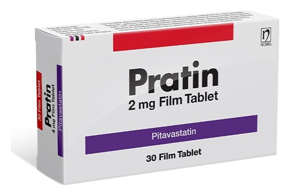

Pratin 2 mg Film Kaplı Tablet, 30 Adet

Ne için kullanılır
KT · Bölüm 1PRATİN, pitavastatin adlı ilacı içermektedir. ‘Statinler’ adı verilen bir gruba aittir. PRATİN yetişkinler ve 6 yaş ve üzeri çocuklarda kandaki yağ (lipit) seviyelerini düzeltmek için kullanılır. PRATİN, total kolesterol (TC), LDL-C ve trigliserid oranlarını düşürmek ve HDL- C oranını yükseltmek için kullanı lır. Kardiyovasküler olay riskinin yüksek olduğu düşünülen hastalarda majör kardiyovasküler olaylardan korunma sağlar. Yağlarınızdaki bir dengesizlik, özellikle kolesterol, kalp krizine veya inmeye yol açabilir.
Yağlarınızda dengesizlik olduğu ve diyetinizi değiştirip yaşam tarzınızda değişiklikler yapmak
bu durumu düzeltmek için yeterli olmadığından size PRATİN verilmektedir.
PRATİN alırken kolesterol düşürücü diyetinizi ve yaşam tarzınızdaki değişiklikleri sürdürmelisiniz.
PRATİN, beyaz, yuvarlak, bombel൴ f൴lm kaplı tabletler, 30 f൴lm kaplı tablet ൴çeren kutularda sunulmaktadır.